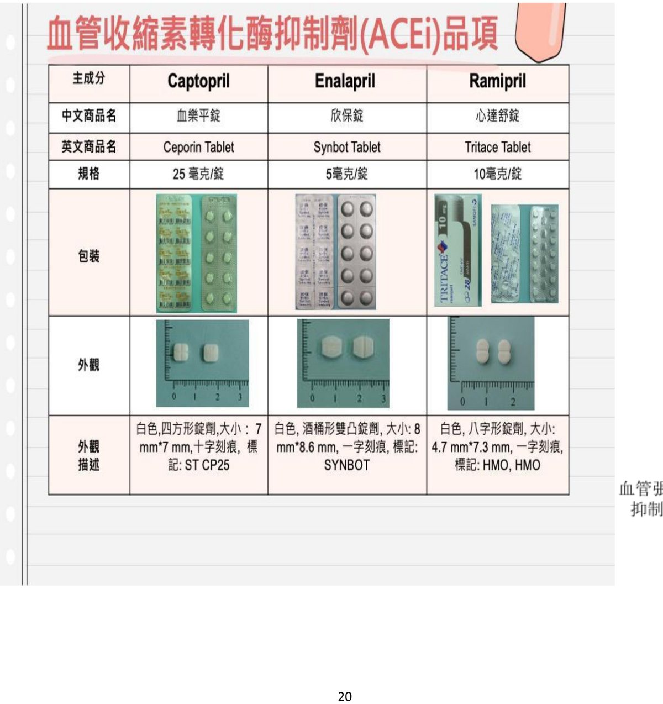
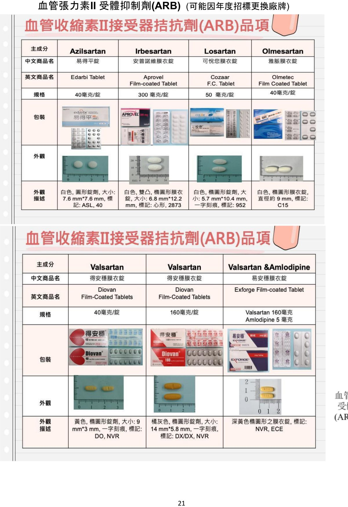
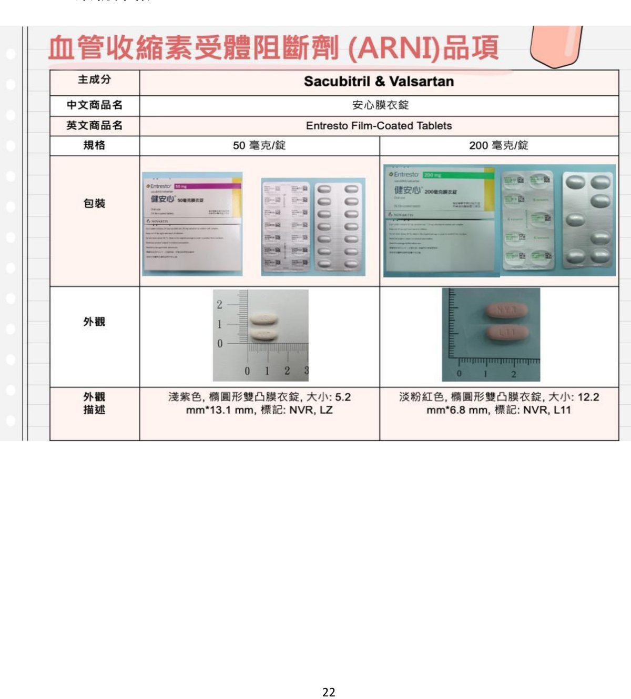
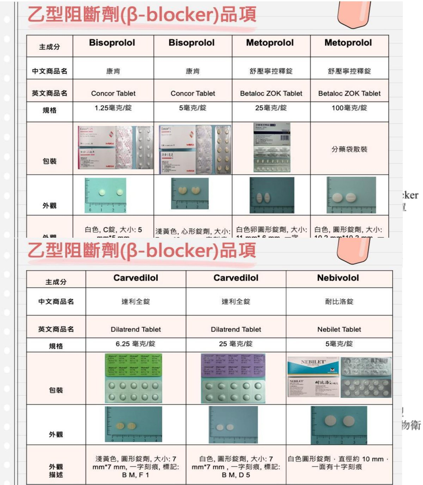
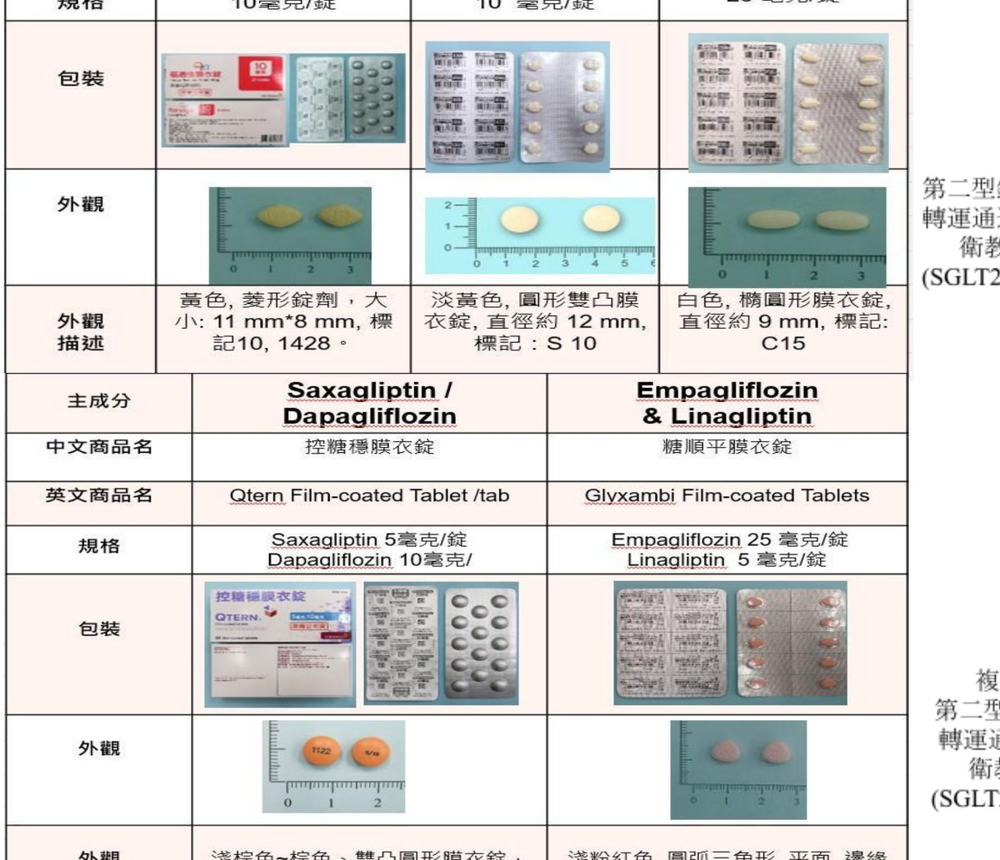
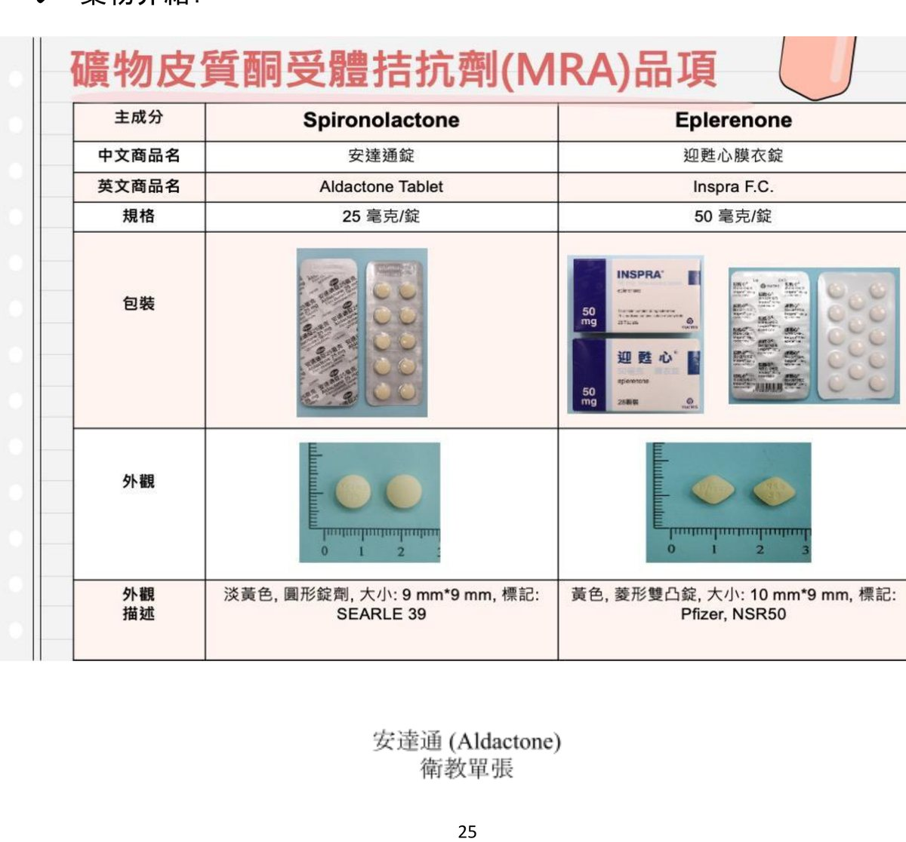
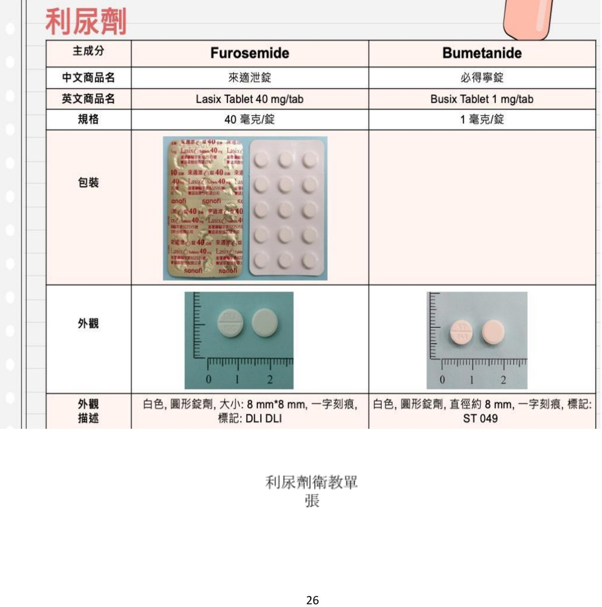
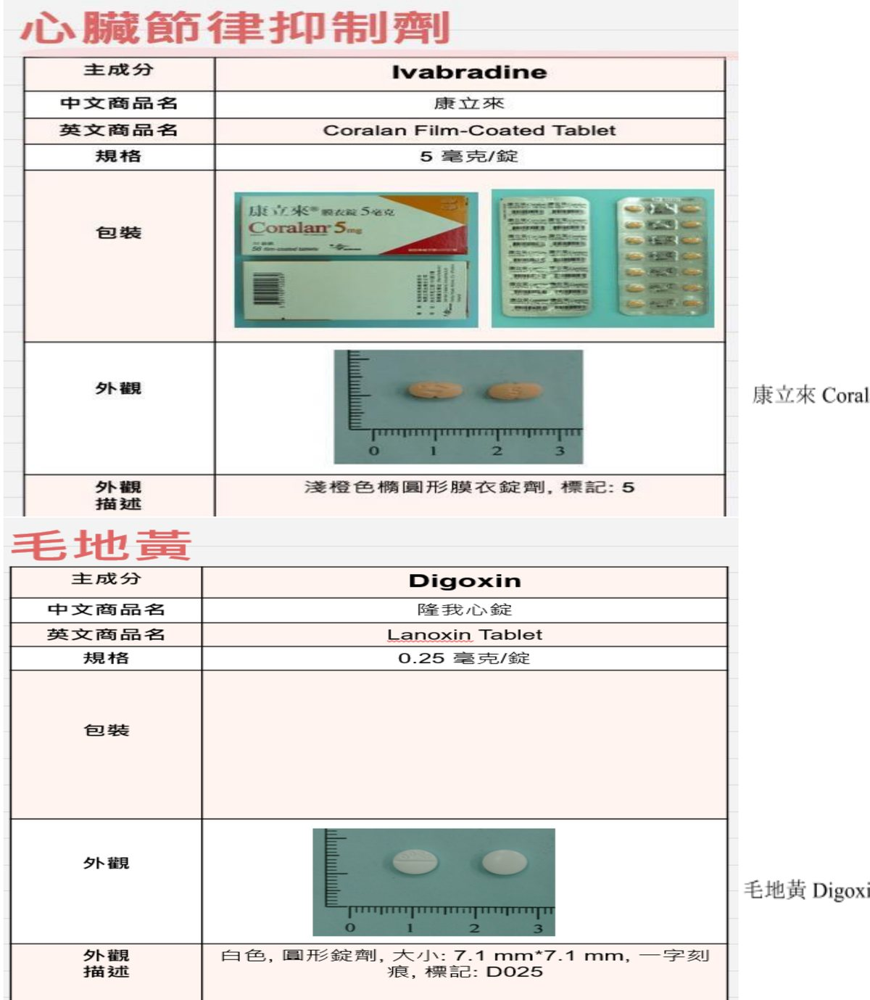

藥物治療與注意事項
心臟衰竭是長期疾病，需長期、規律服藥。請勿自行停藥；若有服藥問題，請告知醫師或來電與藥師、專科護理師討論。
一般藥物服用注意事項
- 服藥後若有嚴重過敏反應（如呼吸困難、喉頭腫脹、全身紅疹），請立即停藥並就醫。
- 主動告知醫師或藥師所服用的所有藥品，包含中藥與保健食品；避免自行購買藥物（尤其應避免 NSAIDs 非類固醇消炎止痛藥）。
- 醫師會依疾病與症狀調整藥物，請勿自行調整或停藥。
- 養成服藥前先測量血壓、心跳的習慣（血壓監測口訣「722」：連續 7 天、早晚各量、每次間隔測 2 次，每次量 2 遍）。
以「吃藥週期的一半」為基準：若想起時接近下一次服藥時間，請跳過一次，下次服藥照常，切勿補服雙倍劑量；若仍在「吃藥週期的一半」之內，則儘快補吃。
範例：固定每日早上 9 點、晚上 9 點服藥，兩次間的中點為下午 3 點——以此為分界判斷補服或跳過。
建議使用藥物總覽
下表整理心臟衰竭常用藥物的類別與主要注意事項。各類藥物的詳細品項請見後續各節。查詢藥物衛教資訊：本院網站 → 為民服務 → 電子藥典 → 藥品綜合查詢 → 藥品查詢，輸入藥名。
| 藥物類別 | 主要注意事項 |
|---|---|
| 血管張力素轉化酶抑制劑（ACE-I）／血管張力素 II 受體阻斷劑（ARB） | 低血壓、高血鉀、肌酸酐升高、乾咳（ACE-I） |
| 血管張力素受體-腦啡肽酶抑制劑（ARNI） | 低血壓、高血鉀、肌酸酐升高 |
| 乙型阻斷劑（β-blocker） | 心跳過緩、低血壓 |
| 礦物皮質酮受體拮抗劑（MRA） | 高血鉀、低血壓 |
| 鈉-葡萄糖共同輸送器第二型抑制劑（SGLT2i） | 生殖泌尿道感染、低血壓、酮酸血症 |
| 利尿劑（Loop diuretics） | 低血壓、低血鉀 |
| Ivabradine（康立來） | 心跳過緩 |
| 毛地黃配糖體製劑（Digoxin） | 心跳過緩、腸胃不適 |
血管張力素抑制劑（ACE-I／ARB）
作用：降低血壓、保護心臟，長期使用可降低死亡率與急性冠心症發作及心衰竭的風險。注意事項：監測血壓；懷孕與哺乳者應避免使用。


血管張力素受體-腦啡肽酶抑制劑（ARNI）
作用：治療慢性心臟衰竭（NYHA 第二至第四級）且左心室射出分率降低的病人，減少心血管死亡與心臟衰竭住院風險。注意事項：監測血壓；懷孕與哺乳者應避免使用。

乙型阻斷劑（β-blocker）
作用：降低心跳且降低血壓、減輕心臟工作負荷，長期可預防心衰竭與降低心因性死亡。注意事項：監測心跳與血壓。

鈉-葡萄糖共同輸送器第二型抑制劑（SGLT2i）
作用：可降低心血管死亡、心衰竭住院及急性就醫的風險。注意事項：低血壓、泌尿道感染、低血醣或脫水。嚴重罕見副作用——酮酸中毒：噁心、嘔吐、腹痛，建議立即就醫。

礦物皮質酮受體拮抗劑（MRA）
作用：降低死亡率與住院風險，改善臨床症狀。注意事項：定期量血壓；可能造成血中鉀離子增加，若出現腹脹、意識模糊、呼吸困難、心跳不規則、噁心嘔吐、末梢神經麻木或四肢無力時，應立即就醫。服用 Aldactone 若出現乳房腫脹或疼痛、毛髮增生、月經不順、聲音低沉，請於回診時告知醫師。

利尿劑（Loop diuretics）
作用：排除體內多餘水分、減輕水腫與呼吸急促。注意事項：若對磺胺類藥物過敏，請告知醫師；請依醫師指示服用與調整劑量，突然停藥可能導致病情惡化；服藥後排尿次數可能增加，避免晚上 6 點後服用。

其他藥物（Ivabradine、Digoxin）
作用：可降低心跳、改善心衰竭症狀。注意事項：心跳過緩、腸胃不適。
